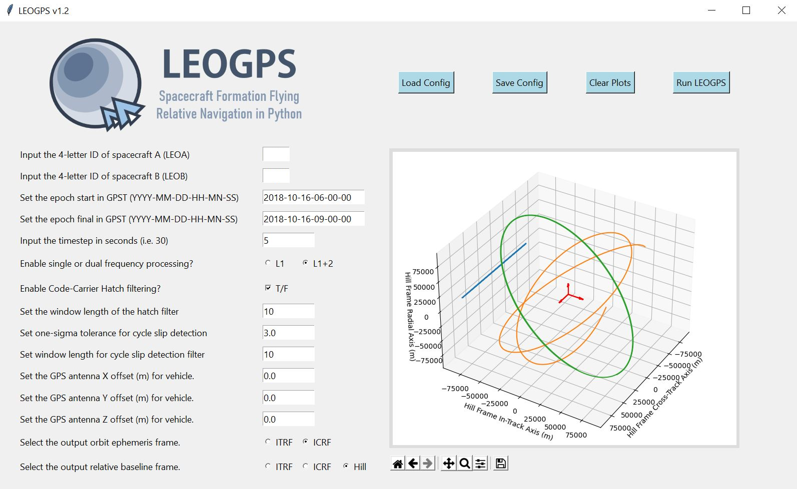

First Steps¶
First, launch LEOGPS by running ‘leogps.py’ in a Python IDE or your terminal, and you will see a user-interface (UI) with input parameters as shown below.
On the left face of the GUI, you would find text entries where you would input your scenario and spacecraft parameters. On the right face of the GUI, you would find an embedded plot object (matplotlib) which would display the relative orbit trajectory after resolving for the relative positions, in the local Hill Frame with satellite LEO-A as the chief (origin).
We may now proceed to run the default LEOGPS scenario that comes with the build, for the GRACE formation flying satellite mission. On the UI, click Load Config. This loads the configuration inputs from config.txt, which, if you did not make any changes to, should correspond to the GRACE formation flying scenario on 27-07-2010 as an example.
Whenever saving (Save Config) or running LEOGPS (Run LEOGPS), all inputs are saved in the ../LEOGPS/config/config.txt/ file. Once the processing starts, several things will happen.
First, notice that the RINEX observation files in the ../LEOGPS/input/ will automatically be Hatanaka-decompressed (file extension changes from ‘D’ to ‘O’). LEOGPS accepts Hatanaka compressed and uncompressed RINEX files. The native LEOGPS comes with two Hatanaka-compressed (file extension ending with ‘D’) RINEX observation files for GRACE A and B.
Second, notice also that LEOGPS will automatically download daily precise (final) ephemeris and clock files from the University of Bern’s CODE FTP, and unzip them automatically. Ephemeris files downloaded will span one day before and one day after the scenario date(s) so that the GPS satellite orbit interpolation can be done beyond the edges of the scenario time-line to prevent edge effects (i.e. ringing, poor polynomial fits etc).
Third, the interpolated data of GPS ephemeris and clocks are saved and plotted in the ../LEOGPS/output/ folders.
Fourth and finally, the desired main output of LEOGPS - the single point positioning (SPP) and carrier phase differential GPS (CDGPS) solutions, are saved in ‘LEOGPS_Results.txt’.
In the native LEOGPS build, the ground truths for the GRACE formation are also provided in the reference directory. These truths are the precise orbit determination solutions, with relative positions validated by the GRACE formation’s actual K-Band ranging radar data.
Note
The results shown in ‘LEOGPS_Results.txt’ are computed in the International Terrestrial Reference Frame (ITRS) which is an Earth-Centered Earth-Fixed (ECEF) frame. However, the plots in the GUI have been transformed into the local Hill-Frame of the chief satellite, at the origin, which by default is LEO-A (the first satellite).
Next, we will discuss what you should take careful note of in your own custom scenario runs.